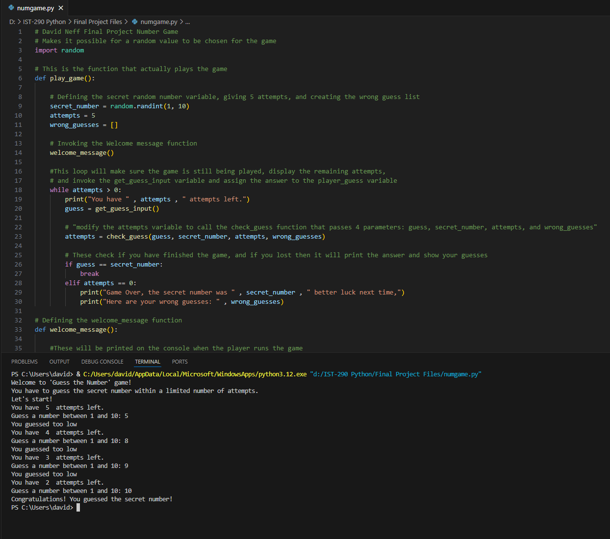
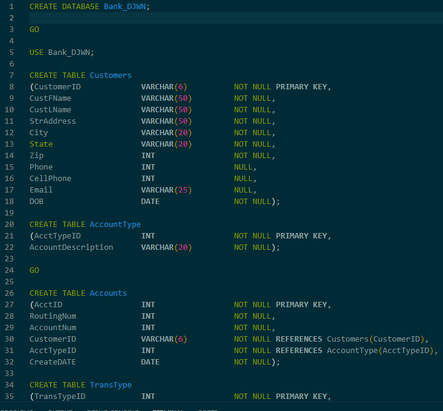
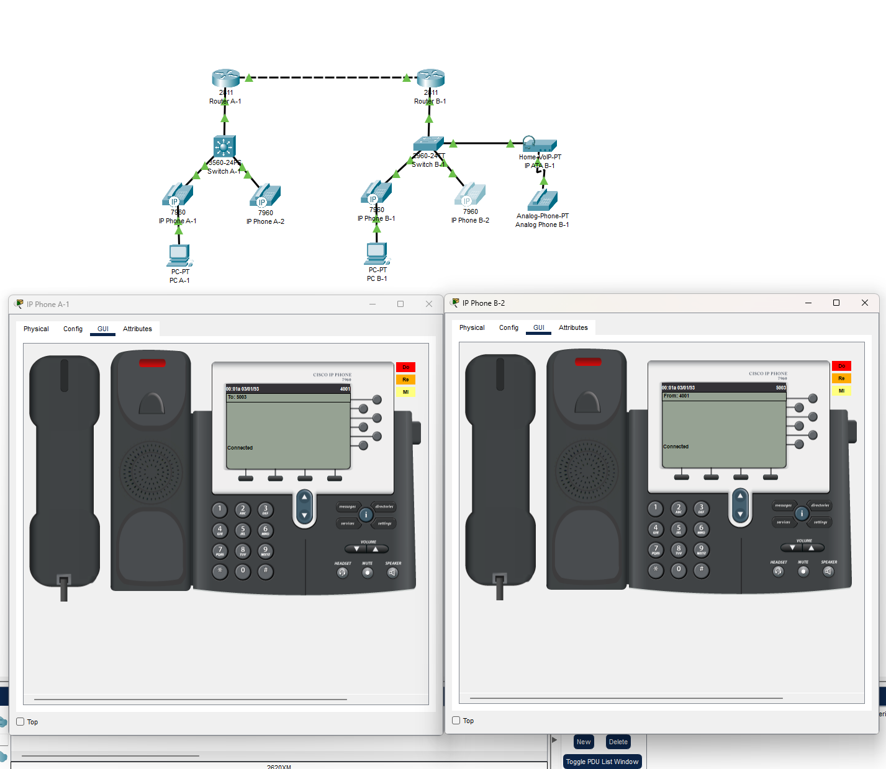

Current Relevant Projects
These are just a few of the projects I have recently worked on that help shape my education and show what I can do to prospective employers.
Python Final Project
This project had me take all of the knowledge from my Python Essentials I class and create a game which gives the user 5 guesses to guess a secret number from 1 to 5.
For this project I used skills like:
- Defining Functions
- Creating Lists, Variables, and Type Casting
- Looping and Exceptions
- Troubleshooting code to create a desired output.
Database Final Project
This project asked me to write a script that would create a relational database, tables, insert data into the tables, and query the database for certain data.
For this project I used skills like:
- Writing scripts using DDL and DML.
- Keeping track of data types and enforcing referential integrity.
- Using SQL to retrieve data from tables in a database.
- Other basic Database Management skills.
Voice Primer Lab
This project asked me to troubleshoot a simualted VoIP network to ensure all devices could be correctly configured dynamically.
For this project I used skills like:
- Setting up VLANs and DHCP for a network.
- Creating a VoIP network that automatically assigns phone numbers to IP phones.
- Troubleshooting issues with a VoIP network.
- Ensuring VoIP connections between networks using basic routing skills.
This website itself is also a good example of a project! I have written the code myself using HTML, CSS, and JavaScript. I had to make the website for my Advanced Webpage Programming class and it was updated in November 2025 for my VoIP class.